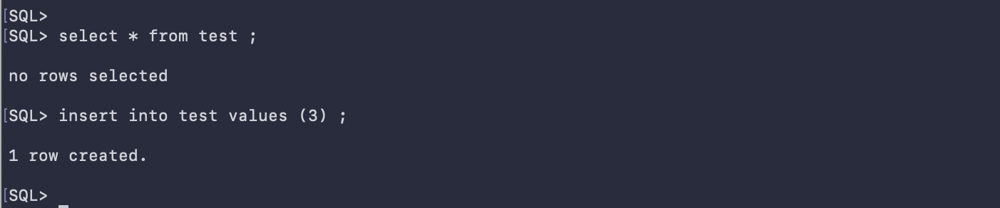

はじめに
Application ContinuityとはOracle Databaseの高可用性機能の一つであり、トランザクション実行中にエラーが発生した際に、そのエラーをアプリケーションに戻すことなく透過的にトランザクションを再実行する仕組みです。

Autonomous Database では接続サービス毎にApplication Continuity(AC)、もしくはTransparent Application Continuity(TAC)を有効化することができます。 クライアント側がAC/TACに対応していれば、障害発生時にクライアントとサーバーが独自にやり取りをしてCommit済みのトランザクションかどうかを判断し、もしCommitが完了していなければ自動的に再実行します。
尚、AC/TACに関する技術詳細は「こちら」をご参照ください。更新処理の途中で異常終了してしまったら何が起こるのか？と言った動作の詳細から対応可能なエラー、または対応するクライアントの種類やアプリケーションの実装方式について詳細に解説しています。
それでは、Autonomous DatabaseにおけるApplication Continuityの設定方法と具体的にエラーを発生させながらその動作について見ていきましょう。
尚、本チュートリアルで利用するSQL*PlusはAC/TACに対応しているクライアントの一つです。
本来であればRAC構成としてインスタンス障害やメンテナンスによる瞬断を想定したいところですが、ADBにおいてはそのような操作・設定はできないため、本チュートリアルでは接続中のセッションに対してAlter system kill session コマンドにて擬似的に障害を発生させ、動作確認を行います。
目次 :
前提条件 :
- 「101:ADBインスタンスを作成してみよう」 を参考に、ADBインスタンス、およびADBUSERが作成済みであること
- SQLコマンドを実行するユーザインタフェースは、接続の切り替えが容易なので、SQL*Plusを利用しています。Database Actionsでも実行可能ですが、ユーザでの接続をログインに読み替え、ログインしなおす必要があります。なお、 SQL*Plusの環境は、「204:マーケットプレイスからの仮想マシンのセットアップ方法」で作成できます。
- チュートリアルの便宜上、インスタンス名は「atp01」、各ユーザのパスワードはすべて「Welcome12345#」とします。
所要時間 : 約30分
1. 事前準備
動作確認のためTeraterm等の端末を2つ用意してください。それぞれADBUSERおよびADMINで作業します。
まず端末1でADBUSERにログインし、動作確認用の表を一つ作成しておきます。
sqlplus adbuser/Welcome12345##@atp01_tp
--テスト表を削除（初回はエラーになります）
drop table test ;
--テスト用に表を作成します。
create table test (id number) ;
--SQL*Plusを終了します。
exit
結果 :

端末2でもADMINにてログインしておきます。
sqlplus admin/Welcome12345##@atp01_low
2. デフォルトの状態での動作確認
端末1(ADBUSER)にて更新処理を実施し、TAC有効化前の動作を確認します。
#改めて端末1でADBUSERにログインします。このとき接続サービスTPを使ってログインしてください。
sqlplus adbuser/Welcome12345##@atp01_tp
--トランザクションを開始します。
insert into test values (1) ;
--このままの状態でおいておきます。
結果 :

次に端末2(ADMINユーザ)から、端末1のセッションをKILLして擬似障害を発生させます。
-- セッションID、シリアル#を取得します。
set lines 200
set pages 9999
col username for a10
col failed_over for a12
select
sid, serial#, username,service_name,failed_over
from v$session
where username = 'ADBUSER'
;
-- 取得したセッションID、シリアル#のセッションをKILLします。
alter system kill session '<sid>, <serial#>' ;
結果 :

次に端末1(ADBUSER)に戻って、トランザクションの続きを実行します。セッションが切断されているのでエラーになることが確認できます。
--トランザクションの続きを実行します。
insert into test values (2) ;
SQL*Plusをexitで終了させてください。
exit
結果 :

3. Application Continuityの有効化
それでは次にTACを有効化してみましょう。
端末2（ADMINユーザ）にて以下を実施します。
-- デフォルト設定の確認します
-- （FAILOVER_TYPE列がNULLもしくはNONEであればAC/TACが無効であることを意味します）
set pages 9999
set lines 200
col NAME for a60
col FAILOVER_TYPE for a16
SELECT name, failover_type FROM DBA_SERVICES;
-- 上記SQLで確認した接続サービスを指定し、TACを有効化します
-- （ここでは接続サービスにTPを指定しています）
execute DBMS_APP_CONT_ADMIN.ENABLE_TAC('ABCDEFXXX_ATP01_tp.adb.oraclecloud.com','AUTO',1200) ;
-- 改めて設定が有効化されたかを確認します。
-- （FAILOVER_TYPE列がAUTOになればOKです）
SELECT name, failover_type FROM DBA_SERVICES;
結果 :

DBMS_APP_CONT_ADMIN.ENABLE_TACにおける引数の1200は、REPLAY_INITIATION_TIMEOUTに相当します。トランザクション・リクエスト開始からリプレイ可能になるまでの時間がこの値（秒）を超えた場合は意図せぬ再実行を防ぐためにAC/TACによるリプレイは実施されません。 (参考マニュアル)
4. 有効化した状態での動作確認
それでは先ほどと同様の手順で、TACの動作を確認してみましょう。特にエラーが出ずにCOMMITが完了すればOKです。
#改めて端末1でADBUSERに接続サービスTPを使ってログインし直します
sqlplus adbuser/Welcome12345##@atp01_tp
--テスト表のデータを確認します
select * from test ;
--トランザクションを開始します。
insert into test values (3) ;
--このままの状態でおいておきます。
結果 :

次に端末2(ADMINユーザ)から、端末1のセッションをKILLして擬似障害を発生させます。
-- セッションID、シリアル#を取得します。
set lines 200
set pages 9999
col username for a10
col failed_over for a12
select
sid, serial#, username,service_name,failed_over
from v$session
where username = 'ADBUSER'
;
-- 取得したセッションID、シリアル#のセッションをKILLします。
alter system kill session '<sid>, <serial#>' ;
結果 :

端末1で後続のInsertを実行しCOMMITを発行します。
--トランザクションを開始します。
insert into test values (4) ;
-- commitを発行します。
commit;
-- データを確認します。
select * from test;
結果 :

特にエラーは発生せずにトランザクションが完了したことが分かります。
尚、当該セッションがAC/TACで再実行されたセッションかどうかを調べるにはどうしたら良いか見ていきましょう。 端末2(ADMINユーザ)にてセッション情報を確認します。
-- セッション情報を確認します。
set lines 200
set pages 9999
col username for a10
col failed_over for a12
select
sid, serial#, username,service_name,failed_over
from v$session
where username = 'ADBUSER'
;
結果 :

SID,Serial#は新しい値であること、またFAILED_OVER列がYESとなっていることからApplication Continuity にて再実行されたセッションであることが分かります。
5. Application Continuityの無効化
最後にTACの無効化方法をご紹介します
端末2（ADMINユーザ）にて以下を実施します。
-- 接続サービスTPを指定し、TACを無効化しています
execute DBMS_APP_CONT_ADMIN.DISABLE_FAILOVER('ABCDEFXXX_ATP01_tp.adb.oraclecloud.com') ;
おわりに
このチュートリアルではApplication Continuityの概要から有効化方法および簡易的な動作確認の方法についてご紹介しました。
AC/TACにはアプリケーションの実装の仕方で多少制限がありますが、今回ご紹介した手法にてAC/TACが利用できるかをご確認いただくことができますので、是非ご利用ください。
Autonomous Databaseは週末にメンテナンス・ウィンドウが設定されており、セッションの瞬断が発生します（すぐに再接続可能）。この瞬断の影響を避けるための対策としても AC/TACをご利用いただけます。メンテナンス・ウィンドウに関しては「ADB-S技術詳細資料」を参照ください。 尚、Autonomous DatabaseではバックエンドでOracle Real Application Clusters(RAC)、およびExadataが利用されており、各種パッチ適用といったメンテナンス作業はサーバー1台ごとにRollingで自動適用されます。他のDBでは一定時間、断続的に接続できない状況になってしまう一方で、ADBであればセッションが切れたとしても隣のインスタンスに接続し直すだけですぐに利用可能です。またこのときにAC/TACを有効化していると接続エラーを自動検知し接続先を切り替えトランザクションを再実行し何事もなかったかのように振る舞います。つまり各種メンテナンス作業が行われようともアプリケーションに影響を与えずに業務を継続することができます。
以上でこの章は終了です。次の章にお進みください。